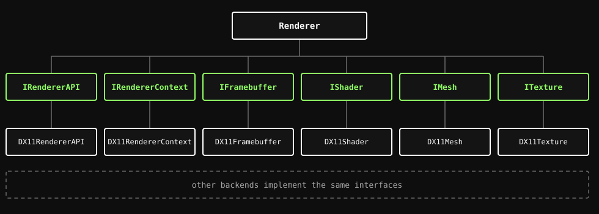
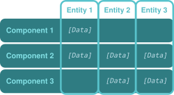

Luna Engine
Building a 3D Game Engine
- Solo project
- C++ · DirectX 11
- Windows
Luna is my long-running game engine and editor, written in C++. It started out on OpenGL, moved to DirectX 11 during my Realtime Rendering module, and has since grown a PBR renderer, rigid body physics, Lua scripting and a project-based editor. It's my sandbox for learning how engines work under the hood.
Renderer Architecture
Luna's renderer was originally written in OpenGL. When I moved it to DirectX 11 during my Realtime Rendering module, rather than doing a straight port, I put the graphics API behind a set of interfaces so the rest of the engine never talks to DirectX directly.

Each interface has a static Create() factory that returns the implementation for the active API. The OpenGL backend has since been retired, so DirectX 11 is the only implementation today, but adding another backend means implementing these interfaces rather than rewriting the renderer.
std::shared_ptr<IFramebuffer> IFramebuffer::Create(const FramebufferSpecification& spec)
{
switch (IRendererAPI::GetAPI())
{
case RendererAPIType::DirectX11:
return std::make_shared<DX11Framebuffer>(spec);
case RendererAPIType::OpenGL:
std::cerr << "RendererAPI::OpenGL is currently not supported!\n";
return nullptr;
}
std::cerr << "Unknown RendererAPI!\n";
return nullptr;
}
PBR Shading
Objects are shaded with a physically based Cook-Torrance BRDF, using a metallic/roughness workflow with albedo, roughness, metallic, normal and ambient occlusion maps. It's the default shader for every new object.
The specular term combines the GGX normal distribution function, Smith's geometry function (Schlick-GGX) and the Fresnel-Schlick approximation. Normal maps are applied in tangent space, and the final colour is tonemapped from HDR with Reinhard and gamma corrected.
float3 F0 = 0.04;
F0 = lerp(F0, albedo, metallic);
float3 L = normalize(-LightDirection);
float3 H = normalize(V + L); // the halfway vector
float3 radiance = LightColour;
// Cook-Torrance BRDF
float NDF = DistributionGGX(N, H, roughness);
float G = GeometrySmith(N, V, L, roughness);
float3 F = FresnelSchlick(max(dot(H, V), 0.0), F0);
float3 numerator = NDF * G * F;
float denominator = 4 * max(dot(N, V), 0.0) * max(dot(N, L), 0.0001);
float3 specular = numerator / denominator;
float3 kS = F; // specular is equal to the fresnel
float3 kD = (float3) 1.0f - kS; // specular + diffuse = 1, so diffuse = 1 - specular
kD *= 1.0 - metallic; // pure metals have no diffuse factor
Lo += (kD * albedo + specular) * radiance * max(dot(N, L), 0.0);
Shadow Mapping
Shadows use shadow mapping. Each frame, the scene is first rendered from the directional light's point of view into a 2048×2048 depth buffer, using an orthographic projection since a directional light's rays are parallel. In the main pass, each pixel is transformed into the light's space and compared against that depth buffer to decide whether it's hidden from the light.
A single depth comparison gives hard, jagged edges, so the shader takes a 5×5 grid of samples around each pixel (percentage-closer filtering) and averages them to soften the shadow.
float currentDepth = input.FragPositionLightSpace.z / input.FragPositionLightSpace.w;
float width = 0;
float height = 0;
shadowMap.GetDimensions(width, height);
float2 texelSize = 1.0 / float2(width, height);
float shadow = 0;
for (int x = -2; x <= 2; ++x)
{
for (int y = -2; y <= 2; ++y)
{
float closestDepth = shadowMap.Sample(shadowSampler, projCoords + (float2(x, y) * texelSize)).r;
shadow += currentDepth > closestDepth ? 1.0 : 0.0;
}
}
shadow /= 25;
The original OpenGL version of Luna used cascaded shadow maps, which split the view frustum into several shadow maps so shadows close to the camera stay sharp. Cascades haven't been ported to the DirectX 11 renderer, so it currently uses a single shadow map with a fixed frustum.
Rigid Body Physics
Luna has its own rigid body physics, built during my physics module. Objects with a PhysicsComponent are affected by gravity, drag and applied forces, and can rotate under torque using an inertia tensor, with their orientation stored as a quaternion.
Collision shapes come from a ColliderComponent, either a sphere or an oriented bounding box. Sphere–sphere, sphere–box and box–box collisions are supported. Box–box uses the separating axis theorem, testing all 15 candidate axes and keeping the one with the smallest overlap as the collision normal.
float minPenetration = FLT_MAX;
glm::vec3 bestAxis;
bool colliding = true;
for (glm::vec3 v : axis)
{
v = glm::normalize(v);
// project both boxes onto the axis
float rA = (collider1->m_ColliderSize.x * transform1->scale.x) * glm::abs(glm::dot(v, o1[0])) +
(collider1->m_ColliderSize.y * transform1->scale.y) * glm::abs(glm::dot(v, o1[1])) +
(collider1->m_ColliderSize.z * transform1->scale.z) * glm::abs(glm::dot(v, o1[2]));
float rB = (collider2->m_ColliderSize.x * transform2->scale.x) * glm::abs(glm::dot(v, o2[0])) +
(collider2->m_ColliderSize.y * transform2->scale.y) * glm::abs(glm::dot(v, o2[1])) +
(collider2->m_ColliderSize.z * transform2->scale.z) * glm::abs(glm::dot(v, o2[2]));
float d = glm::abs(glm::dot(transform1->position - transform2->position, v));
float penetration = (rA + rB) - d;
if (penetration < 0.0f)
{
colliding = false; // found a separating axis
break;
}
if (penetration < minPenetration)
{
minPenetration = penetration;
bestAxis = v;
}
}
if (colliding)
CollisionResponse(ECS, id, id2, bestAxis, minPenetration, deltaTime);
Collisions are resolved with an impulse based on both objects' masses and restitution, followed by a positional correction to push them apart. I also experimented with angular collision response, but cut it as it was too complex for the time I had.
Objects can be moved with the editor gizmos while the simulation is running; the physics system pauses an object while it's being dragged.
Entity Component System (ECS)

Game objects in Luna are just IDs. Their data lives in components (Transform, Mesh, Light, Camera, Script, Physics, Collider and so on), and each component type is stored in its own pool, keyed by the object's ID.
Systems only touch the pools they need. For example, the renderer iterates the mesh components and looks up each one's transform, while the physics system works through the physics and collider components.
The pools are currently hash maps, which keeps lookups simple but doesn't store components contiguously in memory. Switching to densely packed arrays (a sparse set) would make iterating them much more cache-friendly.
std::unordered_map<unsigned int, MeshComponent>& meshComponents = ECS->GetAllComponentsOfType<MeshComponent>();
std::unordered_map<unsigned int, Transform>& transforms = ECS->GetAllComponentsOfType<Transform>();
for (auto& [id, meshComponent] : meshComponents)
{
auto transformIt = transforms.find(meshComponent.gameObject);
if (transformIt != transforms.end())
{
meshComponent.shader->Bind();
meshComponent.mesh->BindMesh();
// bind the material's texture maps
if (meshComponent.material->m_Albedo != nullptr)
meshComponent.material->m_Albedo->BindTexture(0);
// ... specular, normal, metallic and AO maps
ShadowRenderer::GetLightFramebuffer()->BindDepthBufferAsTexture(2);
s_RendererAPI->RenderIndexed(meshComponent.mesh->GetIndexCount(),
&transformIt->second, meshComponent.material);
meshComponent.shader->Unbind();
}
}
Scene Graph
The engine uses a Scene Graph to define parent–child relationships between objects. This allows transformations such as position, rotation, and scale to automatically propagate from a parent to its children, making it easy to build complex objects from smaller parts (e.g., a car body with wheel entities attached).
The Scene Graph works alongside the ECS: entities still hold their own components, but their local transforms are resolved into world transforms through the hierarchy. This ensures efficient rendering and physics updates while keeping the engine flexible and easy to extend.

Lua Scripting
The engine also features Lua Scripting, allowing users to write and maintain code to create complex gameplay features. I am currently using Sol2 bindings to allow the game engine to interact with script files, which greatly simplifies the process of compiling and running scripts. Whilst developing the scripting feature, I tested numerous other languages such as Python and C#, however found that Lua fit the lightweight style I was looking for.
Scripts are treated as assets and referenced by a ScriptComponent, with one script per object. A script defines an Update function, and calls back into the engine through bound functions to move objects, apply forces, set velocities and read input. Scripts also hot-reload: each frame the engine checks whether a script has changed on disk and recompiles it, so gameplay can be tweaked without restarting the editor.
function Update()
movementSpeed = 50;
if(IsKeyDown("a")) then
AddForce(-movementSpeed, 0, 0)
end
if(IsKeyDown("d")) then
AddForce(movementSpeed, 0, 0)
end
if(IsKeyDown("w")) then
AddForce(0, 0, -movementSpeed);
end
if(IsKeyDown("s")) then
AddForce(0, 0, movementSpeed);
end
end
Below is the code for compiling a script. A lot of it is error checking, due to the nature of scripting languages. In Sol2, calling a stored function is no different to calling a standard C++ function.
void Script::Compile(std::string filepath)
{
if(filepath == "") filepath = m_Filepath;
else m_Filepath = filepath;
m_LastCompilationTime = std::filesystem::last_write_time(filepath);
m_Lua.open_libraries(sol::lib::base, sol::lib::math);
m_CompiledScript = m_Lua.load_file(filepath);
if (!m_CompiledScript.valid())
{
sol::error err = m_CompiledScript;
std::cerr << "[SCRIPT] " << m_Filepath << " filepath failed to compile: " << err.what() << std::endl;
return;
}
BindFunctions();
sol::protected_function_result result = m_CompiledScript();
if (!result.valid())
{
sol::error err = result;
std::cerr << "[SCRIPT]" << m_Filepath << " runtime error: " << err.what() << std::endl;
return;
}
m_Start = m_Lua["Start"];
m_Update = m_Lua["Update"];
}
Editor
Luna comes with an editor built on Dear ImGui, using its docking and viewport features so panels can be rearranged or popped out into separate windows, similar to professional editors. It includes:
- A Scene view with a free-flying editor camera and translate, rotate and scale gizmos (ImGuizmo), plus a separate Game view rendered from the scene's main camera, with play and stop.
- Hierarchy and Inspector panels for creating objects and editing their components.
- A Content Browser for navigating, creating and deleting assets, which can be dragged straight into the inspector.
- A node-based Material Editor: drag in a material, connect texture nodes to its albedo, roughness, normal, metallic and AO inputs, and save it as a material asset.
- Projects: the editor opens
.lunaproject files, and new projects can be created from inside the editor, starting with a template scene (camera, light and floor) and a set of default assets.
A shader graph editor is in progress, built on the same node editor as the material editor.
Job System
Luna Engine features a job system to move work off the main thread, starting with asset loading. A JobManager starts a fixed pool of worker threads that pull work from a shared queue. Each job is a small class with a Work() function, paired with a package holding the data it needs.
The queue is a two-lock concurrent queue: a linked list with a dummy head node and separate locks for the front and back, so one thread can push work while another pops it without fighting over the same lock.
void Push(T object)
{
ConcurrentQueueNode<T>* nextNode = new ConcurrentQueueNode<T>();
nextNode->m_Data = object;
m_BackLock.lock();
m_BackNode->m_Next = nextNode;
m_BackNode = nextNode;
m_BackLock.unlock();
}
bool Pop(T& object)
{
m_FrontLock.lock();
ConcurrentQueueNode<T>* frontNode = m_FrontNode;
ConcurrentQueueNode<T>* newFrontNode = frontNode->m_Next;
if (newFrontNode == nullptr)
{
m_FrontLock.unlock();
return false;
}
object = newFrontNode->m_Data;
m_FrontNode = newFrontNode;
m_FrontLock.unlock();
delete frontNode;
return true;
}
For asset loading, meshes and textures are now referenced through handles that track whether they're unloaded, loading or loaded. Worker threads parse OBJ files and decode textures into CPU-side buffers, then the main thread creates the GPU resources from a queue of finished loads. The renderer skips anything that isn't loaded yet, so a scene fills in as its assets arrive instead of the editor freezing while they load.